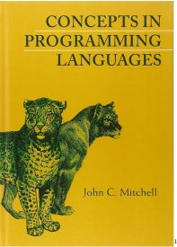

CM22012 Advanced Programming
Unit introduction
1 What is “advanced programming”
-
• The purpose of this Unit:
-
• How to choose the right tool for the job
-
• Or…
Why Java is not always the answerWhy Python is not always the answerWhy Haskell is not always the answerWhy insert favourite language here is not always the answer
But sometimes is
“Why are you teaching me how to use a screwdriver when I am an expert in using a hammer?” (paraphrase of a student question from a previous cohort)
-
• I may include examples of code, without much description, in a language you have not seen before. You should
-
• not panic
-
• take opportunity to read about that language
-
• But, more importantly, you should be getting to the stage of seeing unfamiliar code and being able to have a good guess at what it does
-
• Some details may need researching, but the general idea should be clear
-
• This is because there are many concepts that are shared by lots of computer languages
-
• But there are some concepts that are not — these are the interesting ones!
-
• And understanding the unusual stuff is one thing that distinguishes the really good programmers
-
• The main idea of this Unit is to show you many kinds of language and many kinds of programming, to equip you with the means to make the choice of the right tool for the job
-
• So you don’t try to solve every problem with a Java- or Haskell- or Python-shaped or mallet
-
• But this Unit is not about teaching you new languages
-
• It about exploring programming concepts
-
• Even if you choose to use a familiar old language, you can use it more effectively with knowledge of these concepts
-
• Would you hire a plumber whose only tool is a hammer?
-
• Even if you are a stuck-in-the mud Java (for example) programmer and will use Java forevermore, there are many things in this unit you will benefit from knowing
-
• Some constructs (e.g., iterators, lambdas) that Java is adopting; also some concepts (e.g., automatic type inference; value semantics)
-
• Understanding (a) what they do (b) why they exist (c) why Java is adopting them (d) how to use them effectively; all these will make you a better Java programmer
-
• And if you end up being a manager rather than a programmer, it helps to know what languages or features in languages are there to help weaker (\(= \text {cheaper}\)) programmers be more productive
-
• Be prepared: some people get very wound up by some of the subjects that we will cover
-
• A lot of flame wars on the Internet dealing with programming or programming languages are “programming language X is good” vs “programming language X is bad”
-
• They really mean “X is good for what I do” vs “X is bad for what I do” but the “for what I do” is lost and so the arguments go on forever
-
• People can get stuck in the mind-set of the first language they learned, e.g., Java or Python these days
-
• They try to approach all problems with the tools/concepts they learned in that language
-
• When a new language comes along with a new approach, often their instinct is to say the new language is defective (as it doesn’t do things in the old way) and rubbish it and not try to learn the new ideas it presents
-
• one language is no more logical, natural or correct than any other
-
• the syntax and the concept that the syntax represents are distinct
→ realisation that you can program in any language-
– deeper, better understanding of the programs you read and write
-
– capacity and capability to reason about WHAT you want to write
-
– then translate it into HOW that language supports the concept
→ or does not \(\Rightarrow \) review problem, review solution
→ this is how you become a better programmer -
– makes learning another language more efficient
-
-
• “Programming is a skill acquired by practice and example rather than from books.”Alan Turing
2 About me
3 Unit organization
-
• Monday 17:15–18:05 4E3.10, wks 1-11,15
-
• Tuesday 11:15-12:05 4E3.10, wks 1-11,15
-
• Thursday 13:15-15:05 4E3.10, wks 3,5-11, guest lectures
→ no rooms available wks 1-2,4 -
• 10 weeks of lectures = 2 x 10hrs
-
• 5 credit unit = 100 hours
-
• lectures + tutorials = 20 + [8,16] hours
→ guest lecture 1-2hrs -
• private study = 100-[28,36] = [64,72] = \(>6\)hours/week
→ reading speeds vary -
• lectures are recorded (to Re:View/Panopto)
→ If you have a personal issue with being recorded, please sit in a place not covered by the lecture room camera
-
• CM22012: exam 100%
→ on lecture content and directed reading -
• CM22012 is a 5 credit unit, first taught AY24
→ this year is not going to be the same as last year
→ focus more like AY23 and before but adjusted for 5 credits -
• CM22012 derives from CM20318 (Comparative Programming Languages), 6 credits, AY21-23
→ CM20318 past papers more relevant than CM22012 AY24
→ CM20318 past papers available from library -
• ... prehistory
-
– CM20318 derives from CM20253 (Comparative Programming Languages), 3 credits, AY16-20
-
– CM20253 derives from CM20214 (Advanced Programming Principles), 12 credits, AY??-15 item CM20214 derives from CM20168 (Programming Languages IV), 3 credits, AY09-??
-
– CM20168 derives from QC5, 3 credits, AY96-??
-

-
• slides: basis for notes and for discussion
-
• topics: each slide set addresses a topic; material is grouped by topics and topic groups are scheduled by week
-
• directed reading: supporting ex- aminable material for each topic, some selected from Mitchell (2002): https://doi- org.ezproxy1.bath.ac.uk/10.1017/CBO9780511804175
-
• additional reading: supporting non-examinable material for unit→ please propose additions
-
• web-based material tends to be fairly accurate: Wikipedia is pretty good in this area
-
• but, as always with Wikipedia, you should treat it as only the start and follow up the references
-
• Exercise Have a look at http://rosettacode.org/
-
• me. please use the Q&A forum on moodle so everybody sees the answer
→ I am unlikely to respond outside 9-5, Mon-Fri
→ or direct email, if necessary -
• you. you can also answer each others’ questions
-
• Continuing Exercise read around the topics to fill in more detail
-
• Continuing Exercise when you come across a new (to you) language, write some code using it
→ can also involve installing software; also a useful exercise
-
• synopsis:
You will explore the variety of styles of programming languages, recognise and understand the differences between them, and choose an appropriate style for a given problem. You will learn to debug, profile, and benchmark your programs.
-
• learning outcomes:
→ verbatim from unit catalogue-
1. recognise the various styles of programming language
-
2. understand the differences between them
-
3. choose an appropriate programming style for the problem in hand
-
4. debug, profile and benchmark their programs
→ addition to LOs from CM20318
-
Content (from unit description)
-
• Programming paradigms and language families, for example Functional, Procedural, Object Oriented, Logic, Scripting, Declarative [functional, logic], Macro, Unstructured, Event Driven, etc.
-
• Examples of languages from each style, with comparisons.
-
• Further choices that languages provide, e.g., application based languages; interpreted, bytecoded and compiled; parallel and distributed; OO prototyping, delegation, traits, class centred; managed, unmanaged and garbage collected; static typed, dynamic typed and untyped; call by value, reference, name, need, etc.
-
• Debugging, profiling and benchmarking techniques.
→ addition to content from CM20318
-
1. history + standards
-
2. object-oriented family
-
3. functional languages and types
-
4. logic programming
-
5. parallel programming
-
6. Consolidation week
-
7. bias-driven programming
-
8. debugging + profiling
-
9. writing safe code
-
10. how does an interpreter work?
-
11. how does a compiler work?
-
12. storage management
-
• these slides are reminders to me on what to say in lectures
-
• they are often terse, and so are not the whole story and are not suitable to quote verbatim in an exam
→ do not rely purely on my notes for your revision
-
• consider annotating the slides with points to follow up in private study
-
• like every unit, you are expected to read around the subject for yourself
→ directed reading helps, but you should also do your own research
-
• you need to take your own notes, read, and participate
→ you don’t expect to get fit simply by paying to joining a gym…
-
• concepts not syntax
-
• computation not programming languages
-
• develop your mental programming toolbox
-
• know where to go to find out more when you need to
References
-
Mitchell, John C. (2002). Concepts in Programming Languages. ISBN 0-521-78098-5 (print) 9780511804175 (online). Cambridge University Press. doi: 10.1017/CBO9780511804175.